1 Introduction
Stablecoins have become the settlement asset of the crypto economy and, increasingly, a dollar substitute for people outside the United States. They have also become the preferred medium of the industrialised online fraud that grew out of Southeast Asia’s border casinos and special economic zones. Regional and international bodies describe a system in which victims’ bank transfers are converted, through networks of rented accounts, into USDT on the Tron blockchain and moved through informal “guarantee” marketplaces and underground bankers before being integrated into real assets (United Nations Office on Drugs and Crime 2024, 2025; Financial Action Task Force 2023). Thailand sits at the edge of this system. It hosts a licensed, identity-verified crypto exchange industry and a large retail investor base; it shares long land borders with the compounds of Myawaddy, the casinos of Poipet and the special economic zones of the Golden Triangle; and its banks, police and regulators have spent the past four years tightening controls on so-called mule accounts.
This paper asks three questions that a Thai regulator, an exchange compliance officer or a researcher would want answered. First, is Thai stablecoin behaviour unusual—relative to other crypto-assets traded on the same platforms and relative to stablecoin use elsewhere? Second, is it plausible that criminal networks, including the “call centre” fraud gangs that target Thai victims, launder proceeds through USDT, and through Thai rails in particular? Third, and most important, how could either claim be tested in a way that separates criminal flows from the many legitimate reasons to hold and move digital dollars?
The third question disciplines the first two. Unusual behaviour is not evidence of crime. Thai investors cannot trade crypto derivatives on licensed domestic venues, so buying USDT and withdrawing it to an offshore exchange is the ordinary route to leverage. Millions of migrant workers from Myanmar, Cambodia and Laos live in Thailand and send money home, and two of those countries have recently experienced the high inflation and capital controls that make dollar stablecoins attractive. Honest peer-to-peer dealers receive baht from many counterparties and withdraw quickly, which is exactly what a mule account does. A credible study must therefore name each legitimate motive, state the fingerprint it leaves in data, and show that the residual pattern attributed to laundering survives once those fingerprints are removed.
1.0.0.1 What this paper does
I make four contributions. The first is descriptive and uses only public data. Using the Coin Metrics community files through 23 May 2026, I document that USDT on Tron behaves as a retail payment rail that is economically distinct from USDT on Ethereum (Section 6.1). Tron carries 47% of the USDT supply on the chains covered by the data, up from 19% at the end of 2019. It hosts 74.5 million addresses with a positive balance—5.3 times as many as USDT on Ethereum—with a mean balance of about US$1,200 against roughly US$7,000, and it records 9.3 times as many transfers per dollar of supply. When Circle wound down USDC on Tron in 2024, USDC supply there fell from a peak of US$3.5 billion to under US$30 million, leaving the cheapest high-liquidity dollar rail in the region to a single issuer. In the U.S. Treasury’s sanctions list, 95% of the addresses tagged USDT, TRX or USDC are Tron addresses. I also show that Thailand’s macroeconomic fundamentals give its residents little reason to hold dollars on-chain—its consumer-price inflation averaged 1.7% a year over 2019–2023, the fourth lowest of 23 comparators—whereas Laos (14.9%) and Myanmar have strong legitimate demand (Section 6.3).
The second contribution is a negative result with a methodological lesson. Event studies on chain-wide activity are a tempting way to evaluate crackdowns because the data are free. I estimate abnormal Tron USDT activity around three dated shocks—Thailand’s February 2025 power cut to border scam hubs, its June 2025 block on unlicensed offshore exchanges, and the October 2025 U.S. and U.K. sanctions on Prince Group—and calibrate inference against 149 placebo dates. Conventional bootstrap bands, which already account for serial correlation and trend uncertainty, reject the null at 58% of random dates. Calibrated against the placebo distribution, none of the three shocks is distinguishable from an ordinary week ( between 0.69 and 1.00). Section 4.5 rationalises this: in a channel-choice model in which enforcement raises the cost of one rail, flows are displaced to substitutes and the aggregate is unchanged to first order.
The third contribution is a set of estimators matched to the economics of structuring and pass-through (Section 4). The central one exploits the Bank of Thailand’s face-verification rule, which applies to transfers of 50,000 baht or more. Honest users also dislike the scan and bunch below the threshold, so bunching by itself proves nothing. Under an assumption that hassle avoidance is the same across the assets a deposit funds, the difference in a slope-invariant bunching statistic between USDT-funding and other deposits identifies the volume of structured deposits (Proposition 1). I complement it with dwell-time mixtures, a direction-aware measure of graph exposure to flagged addresses, and synthetic control for policy shocks, and I prove that undirected hop counts mechanically flag exchange hubs (Proposition 2).
The fourth contribution is validation. Because no public dataset links Thai exchange accounts to criminal outcomes, I build an agent-based simulator of an exchange-year with five honest populations (domestic traders, offshore bridge traders including arbitrageurs, cross-border remitters, holders and honest peer-to-peer merchants) and mule accounts whose tradecraft varies, including camouflaged mules on rented, aged accounts (Section 7). Against planted ground truth, the undirected two-hop rule attains a precision of 2–6% among its top-ranked accounts; speed alone attains 6–21%; a direction-aware exposure measure rises from 2% to 86% as prevalence grows; and multi-signal scoring reaches 78–92%. The bunching-difference test rejects in 7.5% of null simulations at a nominal 5% level and in 88% of simulations with 2% mule accounts. Synthetic control has a 2.5% false-rejection rate and 82% power for a 0.10 log-point effect. These magnitudes are properties of the simulator; the ranking of methods and their failure modes are the transferable result.
1.0.0.2 What this paper does not claim
The paper does not estimate how much Thai stablecoin volume is criminal. Doing so requires account-level data that exchanges and the Anti-Money Laundering Office hold and that the Personal Data Protection Act rightly restricts. Instead, Section 8 sets out a pre-registered plan—six hypotheses, the data tier each needs, the estimator and the decision rule—so that the question can be answered as soon as such data are available, without specification search. All code is open, every figure is regenerated from raw files whose checksums are recorded, and every simulated figure is marked as such.
1.0.0.3 Roadmap
Section 2 describes the Thai regime and the regional scam economy. Section 3 relates the paper to work on stablecoins, illicit crypto finance and blockchain forensics. Section 4 presents the conceptual framework, the model and the propositions. Section 5 describes the data. Section 6 reports the evidence from public data and Section 7 the simulation study. Section 8 contains the pre-registered plan, policy implications, limitations and conclusions. Proofs, simulator parameters and replication instructions are in the appendix.
2 Institutional background
This section summarises the rules that shape how stablecoins can be used in Thailand and the regional criminal economy that motivates the paper.1
2.1 Thailand’s digital-asset regime
Crypto exchanges, brokers and dealers serving Thai residents must be licensed by the Securities and Exchange Commission under the Emergency Decree on Digital Asset Businesses of 2018. The licensed market has long been concentrated, with Bitkub holding a dominant share, and it was joined in early 2024 by a joint venture between Gulf Energy and Binance. Five features of the regime matter for stablecoin behaviour.
Baht-quoted trading. Licensed venues have historically quoted assets against the baht; USDT and USDC were added to the list of crypto-assets that may serve as quote assets only in early 2025. Before then the USDT/THB pair was the main gate between baht and on-chain dollars.
No domestic derivatives. Licensed exchanges do not offer leveraged crypto derivatives. Residents who want leverage buy USDT at home and withdraw it to an offshore venue, which mechanically raises the withdrawal rate of USDT relative to other assets.
No payments. Since 2022 licensed businesses may not facilitate the use of crypto-assets to pay for goods and services, so payment use, where it exists, migrates to peer-to-peer and over-the-counter channels that are harder to observe.
Tax. In 2025 the government approved a five-year exemption from personal income tax on gains from sales through licensed Thai providers (2025–2029), raising the return to trading onshore.
Access to offshore venues. In mid-2025 the authorities blocked access to several unlicensed foreign exchanges, a shock that should displace some activity towards peer-to-peer markets and virtual private networks.
2.2 The anti-fraud architecture
Thailand’s response to online fraud has concentrated on the bank accounts through which victims’ money first moves. The Emergency Decree on Measures for the Prevention and Suppression of Technology Crimes of 2023 made it an offence to open, rent out or sell accounts for others to use, and it allowed financial institutions to suspend suspicious transfers and share information. An amendment in 2025 extended these duties to digital-asset business operators and introduced liability for institutions whose negligence enables losses. The police established the Anti Online Scam Operation Center, reachable through the 1441 hotline, in late 2023. Since 2023 banks have also required facial biometric verification for transfers of roughly 50,000 baht or more per transaction, or 200,000 baht or more per day, and for raising transfer limits.
These measures raise the cost of the classic chain in which a victim’s transfer passes through several layers of mule bank accounts before being withdrawn in cash. They create two predictions that this paper turns into tests. The verification threshold should generate structuring—deposits placed just below 50,000 baht—in the channel that launderers use (Section 4.2). And tighter bank-side controls should displace laundering towards channels in which baht leave the banking system quickly, of which converting them into USDT is the most liquid (Section 4.5).
2.3 The regional scam economy
UNODC’s 2024 report on casinos, underground banking and transnational organised crime in East and Southeast Asia describes how criminal groups that grew out of junket and casino operations moved into large-scale online fraud run from compounds in Myanmar, Cambodia and Laos, staffed in part by trafficked workers, and how they settle and launder proceeds through underground banking and stablecoins, with USDT on Tron prominent among them (United Nations Office on Drugs and Crime 2024). A 2025 follow-up documents the industry’s spread to other regions (United Nations Office on Drugs and Crime 2025). The FATF’s report on cyber-enabled fraud describes the same pipeline from the perspective of financial intelligence units (Financial Action Task Force 2023), and its 2025 update on virtual assets highlights the growing use of stablecoins by illicit actors (Financial Action Task Force 2025). Industry analysts report that stablecoins account for a majority of the transaction volume received by addresses they classify as illicit (Chainalysis 2025).
Enforcement against this infrastructure intensified in 2024 and 2025. Tether, the Tron Foundation and TRM Labs formed a financial crime unit to freeze USDT linked to crime. Research by blockchain analytics firms exposed Telegram-based “guarantee” marketplaces associated with the Cambodian conglomerate Huione Group, several of which Telegram removed in 2025 (Elliptic 2024). In February 2025 Thailand cut electricity, internet and fuel supplies to areas across the Myanmar border that host scam compounds. In October 2025 the U.S. and U.K. governments sanctioned the Cambodian Prince Group and associated individuals and entities, the U.S. Department of Justice filed a forfeiture complaint against roughly 127,000 bitcoin, and FinCEN acted to sever Huione Group from the U.S. financial system (U.S. Department of the Treasury 2025; Financial Crimes Enforcement Network 2025). In the same month Myanmar’s military raided the KK Park compound.
Figure 1 places these events on one time axis. Its message for empirical work is simple: nine of the sixteen events fall in the nine months between February and October 2025. Any design that attributes a change in Thai stablecoin flows to one of them must contend with the others, which is why the pre-registered plan relies on narrow windows, control assets and placebo inference.
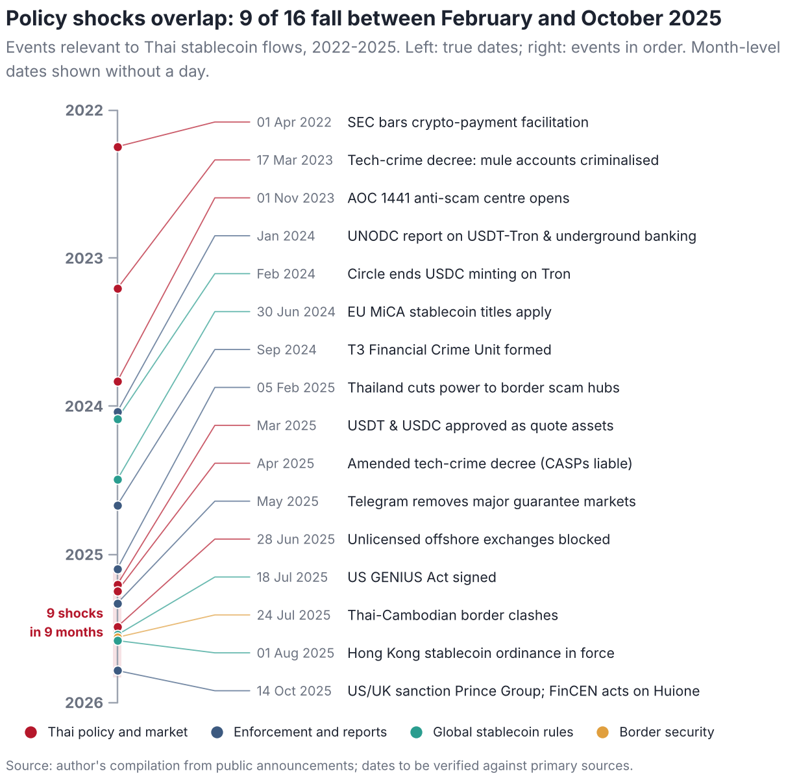
3 Related literature
The paper connects four literatures.
3.0.0.1 The economics of stablecoins
A first strand studies what keeps stablecoins at par and what they do to the rest of the financial system. Lyons and Viswanath-Natraj (2023) show how arbitrage capacity and the issuer’s balance sheet determine deviations from the peg; Gorton and Zhang (2023) draw the analogy with free-banking-era private money; Arner et al. (2020) and the Bank for International Settlements (2025) discuss risks and regulation, and Liao and Caramichael (2022) the implications for bank funding. Work on the interaction between stablecoin issuance and crypto prices includes Griffin and Shams (2020), Ante et al. (2021) and Kristoufek (2021). This literature treats stablecoins mostly as a single asset. I show that the same token on different blockchains serves different clienteles—USDT on Tron is a small-balance, high-turnover rail, USDT on Ethereum a large-balance one—which matters for any analysis of who uses stablecoins and why.
3.0.0.2 Illicit finance in crypto-assets
Foley et al. (2019) estimate the share of bitcoin activity associated with illegal goods using network clustering. Cong, Harvey, et al. (2023) provide an anatomy of crypto-enabled cybercrime, and Griffin and Mei (2024) trace the flows of “pig-butchering” fraud from victims to exchanges, documenting the role of USDT and large centralised exchanges in cashing out. Policy reports by United Nations Office on Drugs and Crime (2024, 2025) and the Financial Action Task Force (2020, 2023, 2025) describe typologies and red flags. Industry reports such as Chainalysis (2025) provide aggregate estimates whose attribution methods are proprietary. Relative to this work I focus on a single jurisdiction at the boundary between the banking system and on-chain rails, and on the identification problem: how to distinguish laundering from the legitimate motives that produce similar data.
3.0.0.3 Market structure and data quality
Makarov and Schoar (2020) document persistent cross-country price premia in crypto markets, such as the Korean “kimchi premium”, that reflect capital controls; I use the analogous USDT/THB premium as a fingerprint of the store-of-value motive. Cong, Li, et al. (2023) show that reported exchange volumes are inflated by wash trading, which is why the plan relies on ratios within a platform and on adjusted volumes rather than on raw cross-exchange comparisons. Auer et al. (2022) relate retail adoption to prices using app-download data.
3.0.0.4 Blockchain forensics and anomaly detection
Address clustering and labelling go back to Meiklejohn et al. (2013); supervised and graph-based approaches to anti-money-laundering on transaction graphs include Weber et al. (2019). I use unsupervised scores—the isolation forest of Liu et al. (2008) and a transparent composite of red flags—because labels are scarce in practice, and I show formally and in simulation that the direction of fund flows must be respected when exposure to flagged addresses is measured. Community detection, used in the replication package for exploratory clustering, follows Blondel et al. (2008).
3.0.0.5 Methods
The bunching estimator adapts the notch and kink designs of Saez (2010), Chetty et al. (2011) and Kleven and Waseem (2013), surveyed by Kleven (2016), to a setting in which the notch is a verification step rather than a tax, and in which a within-platform comparison across assets removes the honest response. Policy evaluation relies on synthetic control (Abadie et al. 2010; Abadie 2021) and, as a robustness check, synthetic difference-in-differences (Arkhangelsky et al. 2021). Cross-country controls include the capital-account openness index of Chinn and Ito (2006).
4 Conceptual framework
4.1 Four motives and their fingerprints
Observed stablecoin flows on Thai rails are the sum of four motives. Trading and offshore bridging: residents buy USDT as collateral or as the vehicle to reach offshore derivatives. Dollar saving: residents hold USDT as a store of value. Cross-border transfer: migrant workers, traders and tourists move value across borders. Illicit pass-through: criminal proceeds enter as baht and leave as USDT. Each motive leaves a distinct fingerprint, summarised in Table 1, and the identification strategy is to remove the first three before interpreting the residual (Figure 2).
Table 1. Motives for holding and moving stablecoins on Thai rails, their fingerprints and how they are tested
| Motive | Fingerprint in the data | Main confounder | Hypothesis |
|---|---|---|---|
| Trading and offshore bridge | USDT volume co-moves with crypto volatility and offshore funding rates; withdrawals go to labelled exchange hot wallets and return after gains | Arbitrageurs move as fast as mules | H1, H2 |
| Dollar saving | Long holding periods; USDT/THB premium over the official rate rises when the baht weakens | Little in Thailand (low inflation) | H1 |
| Cross-border transfer | Small, regular amounts; peaks after paydays and before festivals; destinations are P2P desks in neighbouring countries | Tainted P2P merchants | H1, H6 |
| Illicit pass-through | Young accounts funded by many bank accounts; deposits structured below 50,000 baht; exits within minutes; forward paths to flagged addresses; responds to crackdowns, not prices | Honest P2P dealers, camouflaged mules | H3–H6 |
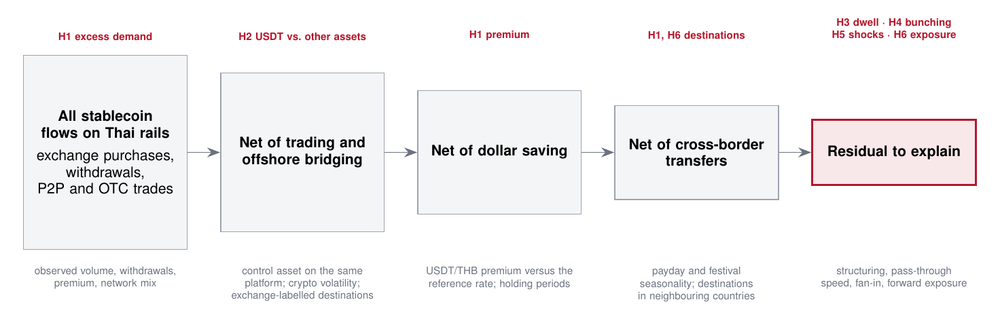
4.2 Structuring at a verification notch
Consider deposits of baht onto a licensed platform. Each deposit has an intended amount and funds an asset class , where denotes USDT and any other crypto-asset. Banks require face verification for transfers of at least baht. Let be the counterfactual density of intended amounts of honest deposits funding , and write for the counterfactual mass in a set .
Honest depositors whose intended amount lies in a response window relocate to a bunching window with probability ; they find the scan a hassle, or simply prefer to split the transfer. Launderers add a mass of structured deposits placed in to avoid the verification step that would expose a mule’s identity. The observed excess mass below the threshold and the responding share are (1) where is the average relocation probability over the response window.
Assumption A1 (Asset-invariant hassle avoidance). : the share of honest deposits intended for the response window that relocate below does not depend on which asset the deposit funds.
Assumption A2 (Channel specificity). : structured deposits fund the stablecoin channel, which offers immediate, liquid exit.
Assumption A3 (Smooth counterfactual). is smooth in on a neighbourhood of , so that it is identified from the observed density outside that window, up to multiplicative round-number effects.
Proposition 1 (Difference in bunching). Under Assumptions A1, A2 and A3, with equality if and only if . The structured stablecoin volume is identified as .
The proof is immediate from Equation (1) and is given in Appendix C. Two features matter in practice. First, the normalisation: the classic statistic divides the excess by the counterfactual density just below . When the two asset classes have amount distributions of different shapes—stablecoin deposits are larger—that statistic differs across assets even when . In the simulation below, a test based on it rejected a true null in 14% of draws at a nominal 5% level; the responding share in Equation (1) reduced this to 7.5%. Second, Assumption A1 can be relaxed. If deposits observed before the verification rule exist, the change in across the rule’s introduction identifies under the weaker assumption that asset-specific differences in honest bunching are stable over time.
Corollary 1 (Difference-in-difference-in-bunching). If is the same before and after the rule’s introduction and no structuring occurs at before it, then .
A placebo version of the test at amounts where no verification step exists ( = 30,000 or 70,000 baht) provides a specification check: under correct specification should be zero.
4.3 Pass-through and the limits of speed
A mule account exists to move value, so the time between a baht deposit and the withdrawal of the USDT it bought—its dwell time—is short. But speed is shared with honest populations: arbitrageurs exploit price gaps within minutes, and peer-to-peer dealers recycle inventory quickly. The following bound formalises why a speed-only rule cannot achieve high precision when such populations exist.
Lemma 1 (Speed is not sufficient). Let mule accounts and honest “fast” accounts have dwell times with distribution functions and , with for all (honest fast accounts are at least as fast). For any rule that flags accounts with dwell time below a threshold , the expected number of flagged mules divided by the expected number of flagged accounts is at most .
In the simulated economy of Section 7 with 2% mules, arbitrageurs and honest dealers make the bound about 0.25; the speed-only score attains a precision of 0.12. Speed is a useful input to a score, not a test.
4.4 Exposure to flagged addresses: direction matters
Compliance systems commonly flag an account if the destination of its withdrawals lies within hops of a sanctioned or frozen address. Let be the directed graph of transfers, with edges pointing in the direction of funds, and let be the flagged set. Let be the undirected distance from to and the length of the shortest forward path from into . For an account with withdrawals of value to destinations , define the value-weighted exposure (2)
Proposition 2 (Hubs and undirected distance). Let be an exchange hot wallet that receives at least one payment from a wallet that pays a flagged address (, ), and suppose every forward path from into has length at least , or none exists. Then while . For , every account that withdraws only to has under undirected distance and under forward distance.
Large exchanges receive deposits from criminals cashing out, so in real data almost every exchange hot wallet satisfies the premise. Because Thai residents who bridge to offshore venues withdraw to exactly these wallets, the undirected rule generates false positives on the population that is largest and least suspicious. Forward distance removes this artefact but not taint contagion: an honest remitter who pays a peer-to-peer merchant that later pays a layering wallet is exposed under both definitions, which motivates value weighting and the combination with behavioural signals.
4.5 Displacement across channels
Why might a crackdown leave no trace in chain-wide data? Suppose a laundering network must move a fixed volume of proceeds through channels —for example licensed-exchange mule accounts (), peer-to-peer desks () and over-the-counter underground bankers ()—with strictly convex costs . Enforcement raises the marginal cost of channel by . The network solves (3)
Proposition 3 (Displacement). At an interior optimum, and for , where . Total flow is unchanged: .
Corollary 2 (Invisible crackdowns). If all channels terminate in the same on-chain asset, an enforcement shock that leaves unchanged has no first-order effect on chain-level volume. If responds through deterrence, the effect on chain-level volume is bounded by the network’s share of that volume.
Corollary 2 is the theoretical counterpart of the event-study result in Section 6.5. It also says where to look instead: the composition of flows—the share of fast, structured deposits on licensed platforms, the peer-to-peer premium, the network mix—moves even when the total does not.
4.6 Typology and control points
Figure 3 summarises, at the level of generality used by the FATF and UNODC, the path of fraud proceeds and the points at which Thai institutions can intervene. The conversion step is the boundary: before it, funds sit in the domestic banking system where they can be frozen quickly; after it, they move on a public ledger where they can be traced indefinitely and, for USDT, frozen by the issuer.
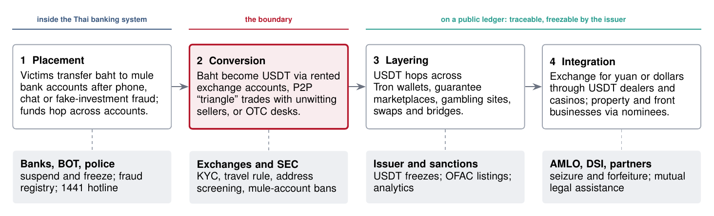
5 Data
The empirical sections use only data that anyone can download; the pre-registered plan specifies the additional data that would be needed. Table 2 lists the sources. All files were retrieved on 8 November 2026 through the collectors in the replication package, which record the URL, retrieval time, size and SHA-256 hash of every file in a manifest (Appendix A).
Table 2. Data sources used in this paper
| Source | Content and coverage | Use |
|---|---|---|
| Coin Metrics Community Data (Coin Metrics 2026) | Daily on-chain metrics by asset and chain: supply, addresses with a balance, active addresses, transfer counts. USDT on Tron (from 2019), Ethereum (2017), Omni and Avalanche; USDC on Ethereum and Tron; through 23 May 2026 | Rails, clienteles, USDC exit, event studies |
| Federal Reserve H.10 (Board of Governors of the Federal Reserve System 2026) | Daily noon buying rates for 22 currencies including the baht, through 30 October 2026 | Exchange-rate volatility |
| World Bank FP.CPI.TOTL.ZG (World Bank 2026) | Annual consumer-price inflation; Thailand to 2023 | Macro motive |
| OFAC SDN digital-currency addresses (Office of Foreign Assets Control 2026) | 1,073 addresses under 17 currency tags; mirror updated 7 November 2026 | Address formats on sanctions lists |
| Author’s event compilation | 16 dated policy and enforcement events, 2022–2025 | Timeline, event windows |
5.0.0.1 Coverage of on-chain data
The community files cover four USDT chains whose combined supply on 23 May 2026 was US$189 billion, against US$193 billion in Coin Metrics’ cross-chain USDT aggregate. Chains absent from the community files, notably TON, Solana and BNB Chain, are excluded from chain-level comparisons; shares reported for Tron are therefore shares of the covered supply. The community files do not contain transfer values, only counts, so I measure turnover as transfers per dollar of supply rather than as value velocity.
5.0.0.2 A data-quality finding
The widely mirrored datasets/inflation package labels its two files the wrong way round: the file named for the GDP deflator contains consumer-price inflation and vice versa. I detected the transposition by checking known values—Thailand’s consumer-price inflation in 2022 was 6.1%, U.S. inflation 8.0%, Türkiye’s 72.3%—and use the corrected file throughout. The World Bank series omits Argentina and Venezuela, and it reports Myanmar only to 2019; the figures mark sparse series explicitly.
5.0.0.3 Sanctions data
OFAC tags digital-currency addresses by currency rather than by chain. I classify each address by its encoding (Tron base58 addresses begin with “T” and have 34 characters; EVM addresses are 42-character hexadecimal strings beginning with “0x”), which identifies the chain on which a USDT address operates. The classification describes the list, not the volume of sanctioned activity.
5.0.0.4 What is not used
The paper does not use proprietary attribution data, exchange account records or police case files, and it does not de-anonymise any address. The collectors for exchange order books and TronGrid transfers in the replication package were not executed in the environment in which the paper was compiled, because those services were not reachable from it; they are provided for researchers who obtain access.
6 Evidence from public data
6.1 USDT on Tron is a retail dollar rail
Figure 4 shows the migration of USDT onto Tron. At the end of 2019 Tron carried 19% of the USDT supply on the covered chains; by mid-2021 it carried half, and on 23 May 2026 it carried 47% (US$89 billion) against 51% on Ethereum (US$97 billion). The share has oscillated around one half since 2021, so “Tron versus Ethereum” is not a story of one chain displacing the other but of two rails of similar size.
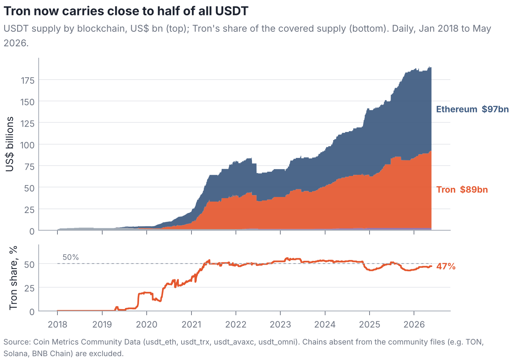
The two rails serve different clienteles. Table 3 reports a snapshot and Figure 5 the history. On 23 May 2026, 74.5 million addresses held USDT on Tron, 5.3 times the 14.0 million on Ethereum, and the mean balance per holding address was about US$1,200 against about US$6,900. Tron recorded 2.1 million USDT transfers that day, 3.1 times Ethereum’s 0.67 million, with less supply. Measured as transfers per US$1 million of supply—a count-based turnover rate—Tron’s median since January 2024 is 32 a day, 9.3 times that of USDT on Ethereum (3.4) and 6.7 times that of USDC on Ethereum (4.8). Small balances turned over often are the signature of a payments rail; large balances turned over rarely are the signature of a settlement and treasury rail.
Table 3. On-chain snapshot of the main dollar-stablecoin rails, 23 May 2026
| Supply | 1-yr | Holders | 1-yr | Active | Transfers | Mean | |
| US$bn | % | m | % | k/day | k/day | balance US$ | |
| USDT on Tron | 89.36 | +21 | 74.49 | +13 | 941 | 2,071 | 1,200 |
| USDT on Ethereum | 97.07 | +33 | 14.01 | +83 | 212 | 667 | 6,926 |
| USDC on Ethereum | 52.72 | +31 | 6.99 | +118 | 118 | 505 | 7,543 |
| USDC on Tron | 0.03 | -30 | 0.38 | +0 | 0 | 0 | 74 |
Notes: Supply in US$ billions; holders are addresses with a positive balance (millions); active addresses and transfers are daily counts (thousands); 1-yr columns give percentage changes over 365 days. Mean balance is supply divided by holders. Source: Coin Metrics Community Data; author’s calculations.
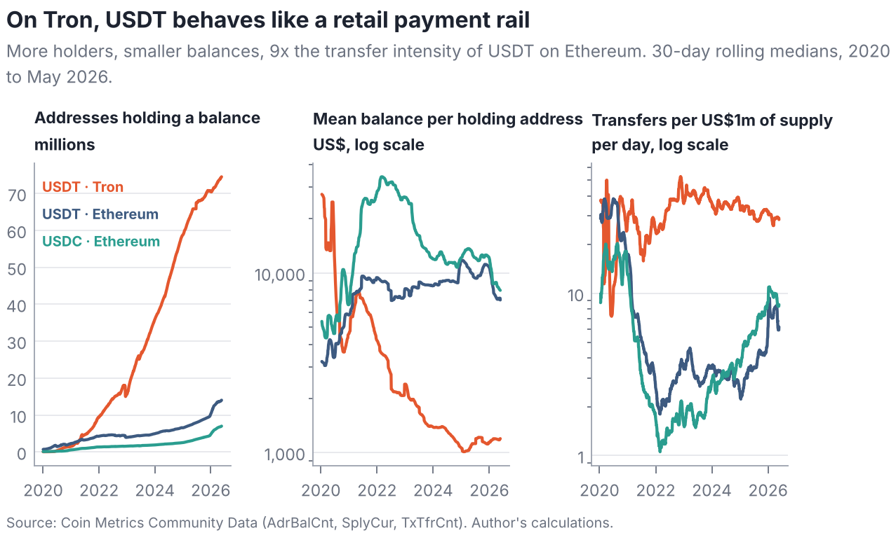
Two caveats apply. An address is not a person: exchanges hold customer funds in omnibus wallets, and individuals hold many addresses. Both biases are, if anything, larger on Tron, where exchanges custody much of the retail float and address creation is cheap, so the comparison of balances per address is indicative rather than exact. The turnover comparison does not depend on address counts and is the more robust of the two.
6.2 Circle’s exit left the cheapest rail to a single issuer
USDC on Tron grew to US$3.5 billion in August 2022 and then shrank. After Circle announced that it would stop minting USDC on Tron in early 2024, supply fell below US$30 million (Figure 6). For users in Southeast Asia who need a cheap, liquid dollar token, USDT on Tron is now, in practice, the only option at scale. This concentration cuts both ways for enforcement: one issuer with the technical ability to freeze tokens sits on the main rail, but regulatory regimes that would restrict USDT, such as the European Union’s, have no regional substitute to push users towards.
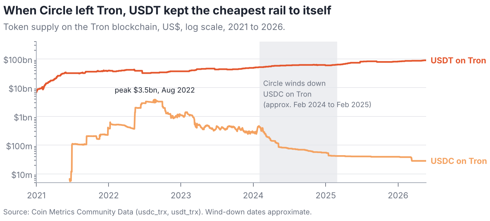
6.3 Thailand has little macroeconomic reason to hold dollars on-chain
Where inflation is high, currencies are volatile or capital is controlled, people hold dollar stablecoins for reasons that have nothing to do with crime. Figure 7 shows that Thailand is not such a place. Its consumer-price inflation averaged 1.7% a year over 2019–2023, the fourth lowest of 23 economies after Japan, China and Malaysia. The baht’s volatility against the dollar since January 2021, 7.8% a year, is in the middle of the 21 currencies in the Federal Reserve’s H.10 release—below the yen, the won and the Australian dollar.
The neighbourhood is different. Inflation averaged 14.9% in Laos over 2019–2024 and was 8.8% in Myanmar in 2019, the last year the World Bank reports, before a period of currency collapse and capital controls. Cambodia is largely dollarised already. Legitimate dollar demand on the other side of Thailand’s borders can and plausibly does flow through Thai platforms and peer-to-peer markets, especially given the millions of migrant workers from these countries in Thailand. This is the most important legitimate confounder for any claim that Thai stablecoin flows are “excessive”, and the pre-registered plan treats it as such (H1 and H6 in Table 8).
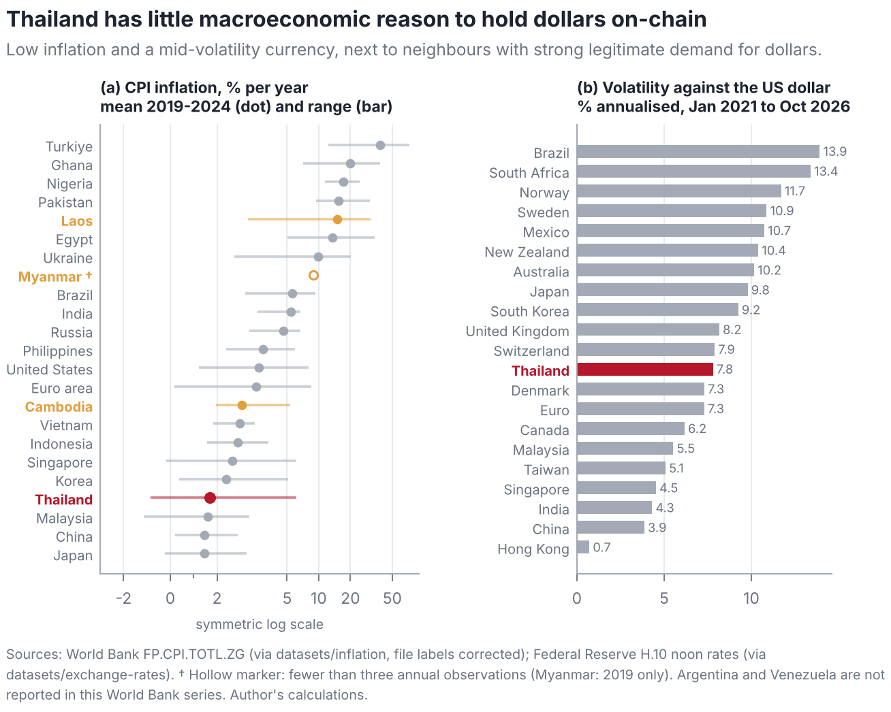
6.4 Sanctions lists point to Tron
Table 4 classifies the 1,073 digital-currency addresses on the OFAC list by the currency tag OFAC assigns and by address encoding. Of the 368 addresses tagged USDT, TRX or USDC, 351 (95%) are Tron addresses; among the 94 tagged USDT, 79 are Tron addresses, eight are Ethereum-style addresses and seven are Bitcoin-style addresses that operated on the legacy Omni layer. Counts of listed addresses are a crude measure: one listing can cover a single wallet or the hub of a large network, and listings reflect enforcement priorities. They nonetheless confirm that, for the authority with the most active crypto-sanctions programme, the stablecoin activity worth sanctioning happens mainly on Tron.
Table 4. OFAC-listed digital-currency addresses by currency tag and address encoding
| Listed under | Bitcoin | EVM (0x…) | Other | Tron (T…) | Total |
|---|---|---|---|---|---|
| XBT | 531 | 0 | 0 | 1 | 532 |
| TRX | 0 | 0 | 0 | 272 | 272 |
| ETH | 0 | 123 | 0 | 0 | 123 |
| USDT | 7 | 8 | 0 | 79 | 94 |
| LTC | 0 | 0 | 13 | 0 | 13 |
| XMR | 0 | 0 | 11 | 0 | 11 |
| BCH | 1 | 0 | 6 | 0 | 7 |
| DASH | 0 | 0 | 5 | 0 | 5 |
Notes: The eight currency tags with the most listed addresses; the remaining nine tags hold 34 addresses. Encoding is inferred from address syntax. Source: OFAC SDN list via the 0xB10C mirror, updated 7 November 2026; author’s classification.
6.5 What chain-wide data cannot do
It is tempting to evaluate crackdowns with the free data used above. For each of three shocks dated to the day—the power cut to border scam hubs on 5 February 2025, the block on unlicensed offshore exchanges on 28 June 2025 and the Prince Group sanctions on 14 October 2025—I estimate a counterfactual for the log of daily Tron USDT transfers from a linear trend with day-of-week effects fitted over days to , and cumulate abnormal activity over days 0 to 30. Bands come from a moving-block bootstrap (14-day blocks) that redraws both the estimation residuals, so that the uncertainty of the extrapolated trend is included, and the future shocks.
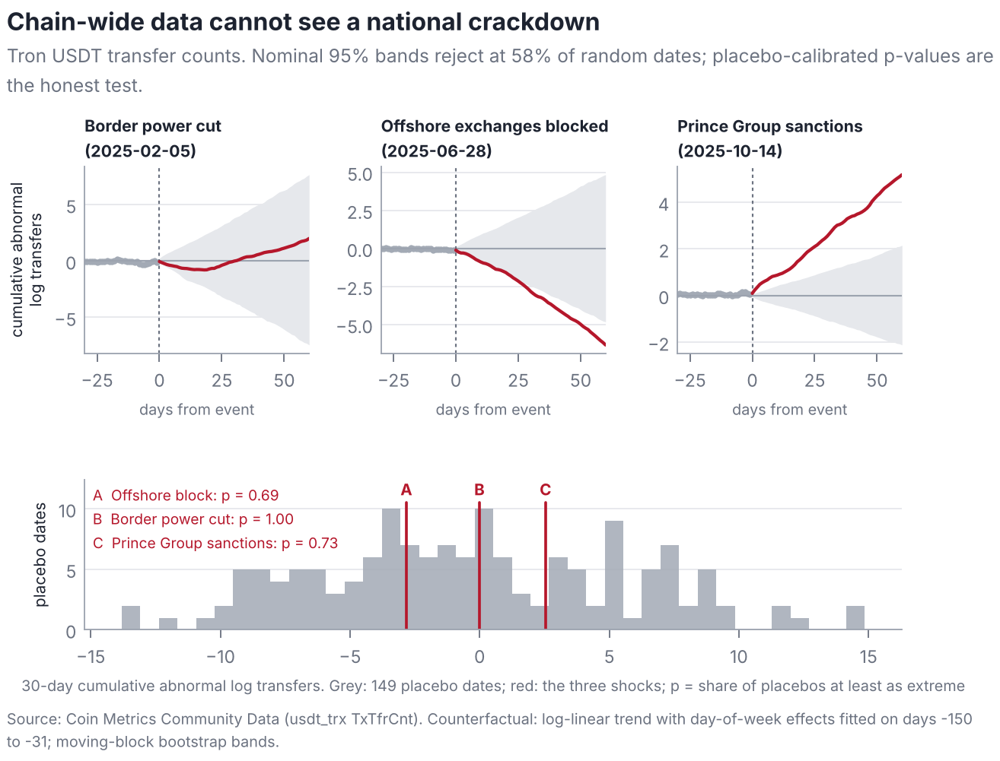
Figure 8 reports the result. Two of the three shocks appear “significant” with opposite signs: after the offshore block, activity falls below the band (cumulative abnormal value log points by day 30); after the sanctions it rises above it (). The bottom panel shows why neither should be believed. Repeating the exercise at 149 placebo dates spaced a week apart, the nominal bands exclude zero at 58% of them. Chain-wide activity is driven by global market events—the sanctions date, for instance, falls days after one of the largest liquidation episodes in crypto history—and by structural breaks that no trend model anticipates. Calibrated against the placebo distribution, the shocks have -values of 1.00, 0.69 and 0.73. The 95th percentile of the absolute placebo values is 11.1 log points, so a shock would have to move global Tron USDT activity by about 36 log points a day, sustained for a month, to stand out. A national crackdown cannot plausibly do that, and by Proposition 3 it need not change the total at all.
The lesson is general. Evaluations of anti-laundering policy that rely on chain-wide aggregates, or on any series dominated by global activity, should report placebo-calibrated inference, and null results from such data say little about whether a policy worked. Credible evaluation needs data on the composition of flows through the channel that the policy targets.
7 Detection design and simulation evidence
No public dataset links Thai exchange accounts to criminal outcomes, and the data that do exist cannot be shared. To learn how the estimators of Section 4 behave before such data are available, I simulate exchange-years in which the truth is known. The simulator is a method-validation device: it is built to make detection hard, its parameters are stylised rather than calibrated to any proprietary dataset, and none of its outputs is evidence about real markets.
7.1 The simulated economy
Each draw simulates 8,000 accounts on one licensed platform over 365 days. An account generates cycles: a baht deposit, the purchase it funds and, possibly, an on-chain withdrawal. Honest accounts belong to five populations that embody the legitimate motives of Section 4.1; Table 5 summarises them and Appendix B lists every parameter.
Table 5. Populations in the simulated exchange-year
| Population | Share | |||
| deposit (THB) | ||||
| exit | Distinguishing behaviour | |||
| Domestic traders | 53% | 4,000 | 3 days | Mostly non-stablecoin purchases; rarely withdraw |
| Offshore bridge traders | 21% | 20,000 | 20 min | 90% USDT; withdraw to exchange hot wallets; 15% are arbitrageurs exiting in about 5 min |
| Cross-border remitters | 10% | 6,000 | 6 hours | Small regular USDT purchases forwarded to P2P merchants abroad, 10% of whom are tainted |
| Holders | 13% | 15,000 | 30 days | Buy USDT and keep it on the platform |
| Honest P2P merchants | 3% | 30,000 | 15 min | Many counterparties (70% of deposits from new bank accounts); fast exits |
| Mules | 0.25–4% | structured | 3–90 min | Draw their own tradecraft; 40% camouflaged on rented aged accounts with pre-layered funding |
Notes: Shares of honest accounts are normalised to sum to one; mules are added at the stated share of all accounts. 35% of honest deposits intended for 50,000–62,500 baht relocate just below 50,000 baht in every population (Assumption A1). Amounts heap at multiples of 1,000 (30% of deposits) and 5,000 baht (12%).
Mules differ from honest accounts on several dimensions at once, but never on all of them. Each mule draws its own exit speed (log-uniform between 3 and 90 minutes), its propensity to structure deposits into the 40,000–50,000-baht band (20–90%) and its share of deposits from fresh bank accounts (40–95%). Forty per cent are camouflaged: they operate rented accounts opened up to three years earlier, receive pre-layered funds from one or two bank accounts, structure little, exit no faster than 30 minutes and route half their withdrawals through exchange hot wallets.
The transaction graph contains 60 flagged addresses, 400 layering wallets, 20 exchange hot wallets and 200 peer-to-peer merchants, plus a personal wallet per account and consolidation wallets for mules. Blacklists are incomplete by design: half of the layering wallets pay a flagged address directly, a fifth do so through another layering wallet and the rest belong to infrastructure nobody has flagged. Forty per cent of layering wallets cash out through exchange hot wallets, which therefore sit two undirected hops from a flagged address—the premise of Proposition 2.
7.2 Estimators and evaluation
The bunching-difference test uses 1,000-baht bins between 10,000 and 110,000 baht, an exclusion window from 45,000 to 65,000 baht, a Poisson counterfactual that is cubic in with multiplicative round-number effects, and a Poisson bootstrap with 200 replications. The dwell score is an account’s mean posterior probability of belonging to the fastest component of a BIC-selected Gaussian mixture on log dwell times. Exposure is Equation (2) with on the undirected graph and on the directed graph. The red-flag composite averages the percentile ranks of eight indicators adapted from the FATF’s red flags (Financial Action Task Force 2020): account youth, funding fan-in, stablecoin share, fast exits, deposits near the threshold, unlabelled destinations, daytime activity and directed exposure. The isolation forest uses the same indicators. “Behaviour” variants drop the exposure indicator, mimicking an exchange without blockchain-analytics data.
Because mules are rare, I report the area under the ROC curve (AUC) and precision at , the share of mules among the highest-scored accounts when equals the number of mules. Precision at is what a compliance team with capacity to review accounts experiences; AUC averages over thresholds nobody uses. For tests, I report size (the rejection rate when no mules exist) and power.
7.3 Results
7.3.0.1 Structuring is visible as a difference
Figure 9 shows one simulated exchange-year with 2% mules. Both channels bunch below the threshold because every population avoids the scan: the responding share is 0.34 for deposits funding other assets, close to the true honest response of 0.35, and 0.51 for deposits funding USDT. The difference, 0.17 (s.e. 0.06), rejects the null of no structuring with a one-sided -value of 0.001. Across the Monte Carlo (Table 6, Panel C), the test rejects in 7.5% of 200 null draws at a nominal 5% level and in 10%, 30%, 38%, 88% and 100% of draws as the mule share rises from 0.25% to 4%. The mild over-rejection reflects a bootstrap standard error about 12% smaller than the Monte Carlo standard deviation; the plan therefore pairs the test with placebo thresholds. Because the standard error scales with the square root of the number of deposits near the threshold, a platform with a hundred times the simulated activity would detect a structuring share an order of magnitude smaller.
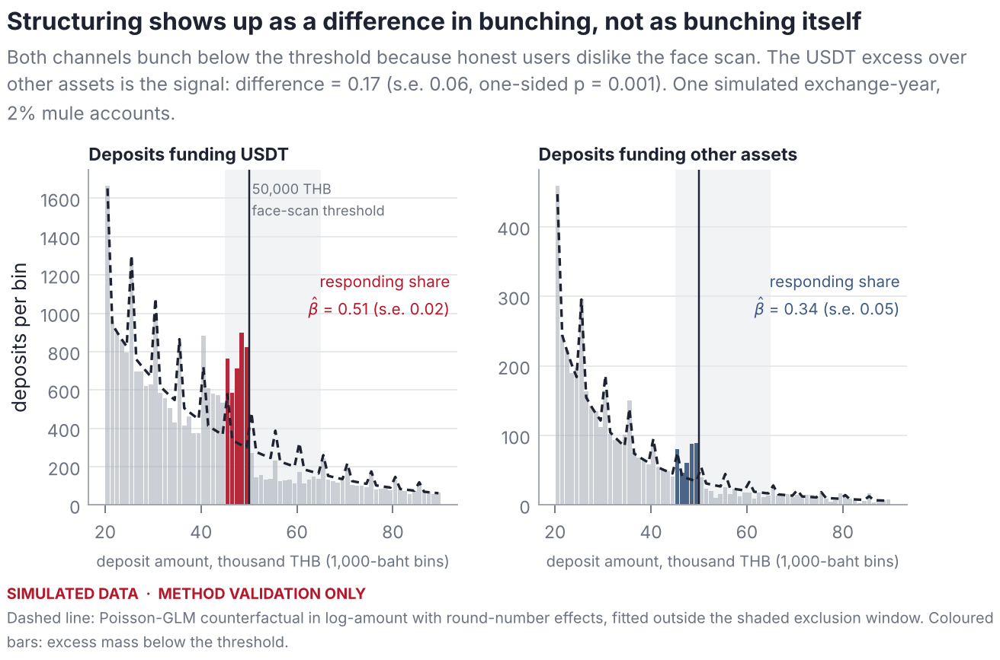
7.3.0.2 Speed cannot separate mules from honest fast traders
Figure 10(a) shows why. Arbitrageurs exit faster than most mules, and honest peer-to-peer merchants exit as fast as camouflaged ones. A speed-only score reaches an AUC of 0.83 but a precision at of only 0.06–0.21 (Table 6), consistent with the bound of Lemma 1. Panel (b) shows the trade-off at the low false-positive rates that matter in practice.
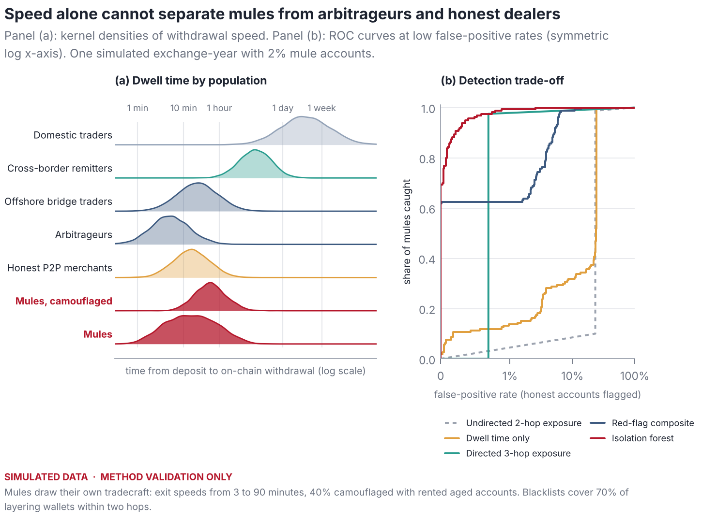
7.3.0.3 Direction matters
The undirected two-hop rule flags every bridge trader and honest merchant, because their withdrawals go to exchange hot wallets that sit, on average, 2.05 undirected hops from a flagged address (Figure 11). Its precision at is 0.02–0.06 at every prevalence—the worst of all detectors—even though its AUC of 0.77 looks respectable. Following funds forward removes this artefact: directed exposure reaches an AUC of 0.98. Its precision at , however, rises only from 0.02 to 0.86 as prevalence grows, because honest remitters who use one of the tainted merchants are fully exposed and tie with mules at the top of the ranking. This is taint contagion, and it is the reason exposure should be one input to a score rather than a verdict.
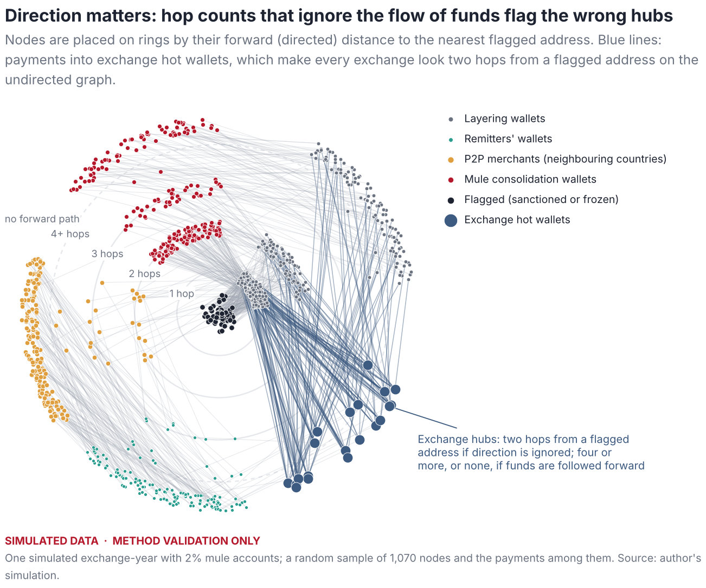
7.3.0.4 Layered evidence holds up
Scores that combine behaviour and exposure dominate (Figure 12 and Table 6). The isolation forest on all indicators attains a precision at of 0.78 at the lowest prevalence and 0.90–0.92 from 1% upwards; without the exposure indicator it attains 0.70–0.83, so blockchain intelligence adds roughly eight to ten points of precision. The transparent red-flag composite is less precise (about 0.60 at every prevalence) but each of its components can be explained to an account holder or a court, a property that matters when accounts are frozen.
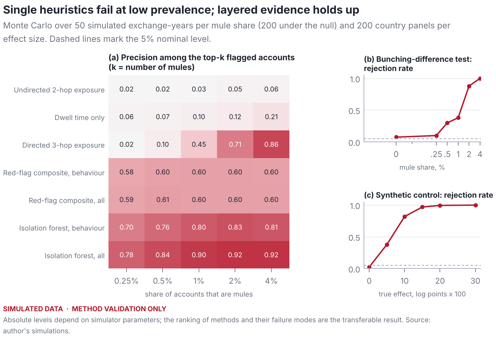
Table 6. Monte Carlo performance of detectors and of the bunching-difference test
| Share of accounts that are mules | |||||
|---|---|---|---|---|---|
| 2-6 Detector | 0.25% | 0.5% | 1% | 2% | 4% |
| Panel A. Area under the ROC curve | |||||
| Undirected 2-hop exposure | 0.774 | 0.775 | 0.775 | 0.773 | 0.775 |
| Dwell time only | 0.826 | 0.827 | 0.828 | 0.829 | 0.827 |
| Directed 3-hop exposure | 0.981 | 0.981 | 0.980 | 0.981 | 0.982 |
| Red-flag composite, behaviour | 0.958 | 0.960 | 0.959 | 0.960 | 0.959 |
| Red-flag composite, all | 0.982 | 0.982 | 0.982 | 0.983 | 0.982 |
| Isolation forest, behaviour | 0.996 | 0.997 | 0.997 | 0.997 | 0.995 |
| Isolation forest, all | 0.999 | 0.999 | 0.999 | 0.999 | 0.999 |
| Undirected 2-hop exposure | 0.02 | 0.02 | 0.03 | 0.05 | 0.06 |
| Dwell time only | 0.06 | 0.07 | 0.10 | 0.12 | 0.21 |
| Directed 3-hop exposure | 0.02 | 0.10 | 0.45 | 0.71 | 0.86 |
| Red-flag composite, behaviour | 0.58 | 0.60 | 0.60 | 0.60 | 0.60 |
| Red-flag composite, all | 0.59 | 0.61 | 0.60 | 0.60 | 0.60 |
| Isolation forest, behaviour | 0.70 | 0.76 | 0.80 | 0.83 | 0.81 |
| Isolation forest, all | 0.78 | 0.84 | 0.90 | 0.92 | 0.92 |
| Rejection rate at 5% | 0.10 | 0.30 | 0.38 | 0.88 | 1.00 |
| Mean | 0.014 | 0.056 | 0.088 | 0.180 | 0.281 |
Notes: Means over 50 simulated exchange-years of 8,000 accounts per column. Precision at is the share of mules among the highest-scored accounts, with equal to the number of mules. Under the null of no mules, the bunching-difference test rejects in 7.5% of 200 draws (mean difference ). Simulated data.
7.3.0.5 Synthetic control is well sized
For policy shocks I simulate weekly flow indices for a treated country and 19 donors driven by two persistent common factors, plant an effect after week 104, and apply synthetic control with rank-based placebo inference. In the example of Figure 13, the method recovers a planted effect of log points as with seven donors receiving weight, and the treated unit ranks first among 20 (). Across 200 panels per effect size (Table 7), the false-rejection rate is 2.5%, power is 38% for a 0.05 log-point effect and 82% for 0.10, and the mean estimate is unbiased.
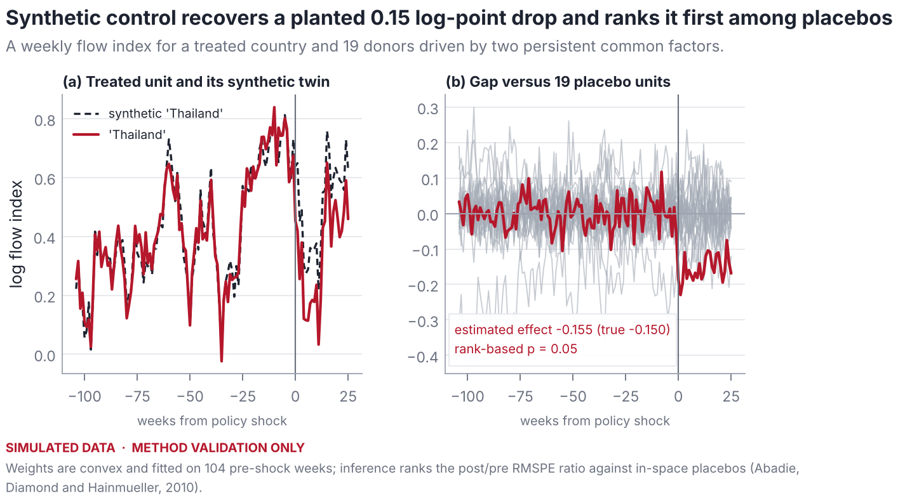
Table 7. Size and power of synthetic control in simulated country panels
| True effect (log points 100) | 0 | 5 | 10 | 15 | 20 | 30 |
|---|---|---|---|---|---|---|
| Rejection rate () | 0.025 | 0.380 | 0.820 | 0.970 | 0.995 | 1.000 |
| Mean estimated effect | -0.001 | -0.051 | -0.101 | -0.151 | -0.201 | -0.301 |
Notes: 200 panels per column, 20 units, 104 pre-treatment and 26 post-treatment weeks; rejection if the treated unit has the largest post/pre RMSPE ratio (). Simulated data.
7.4 What transfers to real data
The absolute levels in Table 6 depend on choices about populations and tradecraft that real data will revise. Four conclusions do not depend on them. First, a statistic that compares the stablecoin channel with another channel on the same platform is far more robust than one that measures the stablecoin channel alone, and its normalisation must not depend on the shape of the amount distribution. Second, speed and undirected proximity, the two heuristics most often described in compliance practice, fail by construction whenever honest fast traders and exchange hubs exist. Third, at low prevalence AUC flatters detectors and precision at should be reported. Fourth, combining behaviour with direction-aware blockchain intelligence is what makes detection precise; neither suffices alone.
8 A pre-registered plan for Thailand
The evidence so far establishes the rail, the weak macroeconomic motive, the regional threat and the limits of aggregate data. Whether Thai stablecoin flows actually carry fraud proceeds, and how much, is an empirical question that requires data held by exchanges, the Securities and Exchange Commission and the Anti-Money Laundering Office. To prevent the specification search that such sensitive questions invite, Table 8 commits in advance to six hypotheses, the data each needs, the estimator, the primary statistic and the decision rule.
Table 8. Pre-registered hypotheses, data, estimators and decision rules
| Hypothesis | Data (tier) | Estimator | Decision rule |
|---|---|---|---|
| H1 Excess stablecoin demand | Exchange volumes by quote asset across 20+ countries; inflation, FX volatility, remittances, migrant stock, capital-account openness, derivatives access (1–2) | Panel regression of the stablecoin share of volume on fundamentals; Thailand’s standardised residual | Residual positive and in the top decile of a leave-one-country-out distribution |
| H2 USDT exits more than other assets | Daily purchases and on-chain withdrawals by asset on Thai platforms (2–3) | Difference between USDT and BTC withdrawal-to-purchase ratios, controlling for volatility and offshore funding rates | One-sided test of a positive difference at 5%; reported net of exchange-labelled destinations |
| H3 Fast pass-through concentrated in young, fan-in accounts | Account-level deposit–purchase–withdrawal cycles (3) | Gaussian mixture on log dwell; fast-component share by account age and fan-in | Difference positive with a bootstrap interval excluding zero, after removing withdrawals to labelled exchanges |
| H4 Structuring below 50,000 baht | Deposit amounts by funded asset, ideally before and after the verification rule (3) | Difference in responding shares (Proposition 1); difference-in-difference if pre-rule data exist (Corollary 1) | One-sided at 50,000 baht and no significant difference at placebo thresholds of 30,000 and 70,000 baht |
| H5 Crackdowns change the composition of flows | Weekly composition series (share of fast structured deposits, peer-to-peer premium, network mix) for Thailand and donor countries (2–3) | Synthetic control and synthetic difference-in-differences; triple difference USDT versus BTC | Rank-based placebo with pre-period fit no worse than the median donor’s |
| H6 Thai withdrawals are more exposed than peers’ | Tron transfers from labelled Thai and peer-country exchange hot wallets; issuer freezes; OFAC list (1–3) | Directed, value-weighted three-hop exposure (Equation (2)) | Thai exposure above the 75th percentile of peer exchanges with a bootstrap interval excluding the peer median |
8.0.0.1 Interpretation
The hypotheses are ordered to separate structure from crime. If H1 and H2 hold but H3–H6 do not, Thai stablecoin behaviour is unusual because of market structure: the absence of domestic derivatives, the baht-quoted market and cross-border demand. If H3–H6 also hold, the residual pattern carries the fingerprints of pass-through laundering, and Proposition 1 converts the bunching estimate into a lower bound on structured volume, since unstructured illicit deposits are not counted.
8.0.0.2 Data access and privacy
Tier-3 analyses should follow a “code goes to the data” model: the replication package runs on the simulator’s synthetic ledger, which has the same schema as the exchange data required, so code can be reviewed, tested and approved before it touches personal data inside a regulator’s or exchange’s secure environment. Only aggregate, disclosure-controlled outputs leave that environment. No address of a person who has not been charged is published.
9 Policy implications
Six implications follow, each conditional on the evidence that the plan would produce.
Monitor differences, not levels. Supervisors and exchanges should track structuring and pass-through as contrasts between the stablecoin channel and other channels on the same platform, with normalisations that do not depend on the shape of the amount distribution. Levels confound crime with hassle avoidance and market structure.
Make exposure screening direction-aware. Screening that counts undirected hops to flagged addresses mechanically flags the exchange hubs to which ordinary investors withdraw. Exposure should follow funds forward, weight by value and decay with distance.
Protect honest peer-to-peer dealers. Honest dealers are the population most easily mistaken for mules and the usual victims of “triangle” fraud, in which a criminal has a victim pay the dealer directly. Requiring that baht payments for peer-to-peer trades come from a bank account in the buyer’s verified name, and creating a fast channel to review frozen dealer accounts, would reduce both the fraud and its collateral damage.
Evaluate crackdowns with composition data and honest inference. Chain-wide aggregates cannot show whether a crackdown worked (Section 6.5). Publishing weekly, anonymised composition indicators—the share of deposits just below verification thresholds, the share of fast exits, the peer-to-peer premium—would make evaluation possible without disclosing personal data.
Anticipate displacement. Fixed, publicly known thresholds create the notch that structuring exploits, and pressure on one channel moves flows to others (Proposition 3). Risk-based verification and coordinated action across banks, licensed exchanges and peer-to-peer markets limit the gain from switching.
Use the issuer and the ledger. Because the region’s main dollar rail has a single issuer able to freeze tokens and a public ledger, regional cooperation with the issuer and with neighbouring authorities can act after the conversion boundary, where Thai banks no longer can.
10 Limitations and ethics
The descriptive evidence covers the chains in the Coin Metrics community files and measures turnover by transfer counts, not values. Address-based statistics are affected by custodial omnibus wallets. Event dates and institutional details were compiled without access to primary legal databases and must be verified. The simulation’s absolute results depend on stylised parameters; its purpose is to rank methods and reveal failure modes, not to estimate prevalence. Statistical anomalies are not evidence of wrongdoing by any person, dealer or exchange, and the paper names entities only where public authorities have acted. The laundering typology is described at the level of published FATF and UNODC material and omits operational detail.
11 Conclusion
Thailand’s stablecoin question is easy to pose and hard to answer. Public data establish that the region’s dominant digital dollar, USDT on Tron, is a high-turnover retail rail on which sanctioned activity concentrates; that Thailand, unlike its neighbours, has little macroeconomic reason to use it heavily; and that chain-wide data cannot tell whether crackdowns work. The answer to whether Thai rails carry scam proceeds lies in the composition of flows at the boundary where baht become tokens. This paper supplies the estimators for that boundary—a slope-invariant difference in bunching at the face-verification threshold, dwell-time mixtures, direction-aware exposure and synthetic control—shows in simulation which of them work and why the common heuristics fail, and commits in advance to how the answer will be read once the data are in hand.
Data and code availability
All data are public. Replication code—the Python package shadowdollars, the scripts that produce every figure and table, unit tests and the data manifest—is provided as ancillary files with this submission. The manifest records the URL, retrieval time and SHA-256 hash of each raw file in the vintage used here; some sources are updated daily, so a fresh download yields a later vintage.
Acknowledgments and disclosure
The author used Claude (Anthropic), an AI assistant, to help draft the text, write the replication code and produce the figures. All quantitative results are computed by the code in the replication package from the data it documents. Simulated results validate methods against planted ground truth and are not evidence about real markets. No individual is accused of wrongdoing; entities are named only where public authorities have acted. Responsibility for any errors remains with the author.
References
datasets/exchange-rates.
coinmetrics/data.
0xB10C/ofac-sanctioned-digital-currency-addresses.
datasets/inflation.
A Data appendix
Table 9 lists the raw files behind every number in Section 6, with the first characters of their SHA-256 hashes. The full manifest, including retrieval timestamps and complete hashes, is data/raw/MANIFEST.json in the replication package.
Table 9. Raw data files used in the paper
| Series | File | Rows | From | To | SHA-256 (prefix) |
|---|---|---|---|---|---|
| USDT on Tron | cm_usdt_trx.csv | 2,595 | 2019-04-16 | 2026-05-23 | 3d4b5f8ad882 |
| USDT on Ethereum | cm_usdt_eth.csv | 3,099 | 2017-11-28 | 2026-05-23 | 700d5db4d59a |
| USDT on Omni | cm_usdt_omni.csv | 4,248 | 2014-10-06 | 2026-05-23 | 298d09512e19 |
| USDT on Avalanche | cm_usdt_avaxc.csv | 1,706 | 2021-09-21 | 2026-05-23 | cadec2e1a8ba |
| USDC on Ethereum | cm_usdc_eth.csv | 2,851 | 2018-08-03 | 2026-05-23 | e08a8607cd78 |
| USDC on Tron | cm_usdc_trx.csv | 1,810 | 2021-06-09 | 2026-05-23 | b96e0d1a28e2 |
| USDT, all chains | cm_usdt.csv | 4,531 | 2013-12-28 | 2026-05-24 | bc6cec81ee59 |
| FX rates, H.10 | fx_daily.csv | 274,031 | 1971-01-04 | 2026-10-30 | 013e19fbdcae |
| CPI inflation | wb_cpi.csv | 11,182 | 1960 | 2024 | 346d29c904c1 |
| OFAC addresses | ofac/*.txt (17) | 1,073 | — | — | see manifest |
Notes: Retrieved on 8 November 2026. Rows are data rows; for the OFAC lists, addresses.
12.0.0.1 Validating the inflation files
Table 10 compares the two files of the datasets/inflation mirror with consumer-price inflation figures that are well known. The file labelled as the GDP deflator matches them; the file labelled as consumer prices does not. The analysis uses the former.
Table 10. The inflation files are mislabelled: values for 2022, per cent
| File labelled “GDP deflator” | File labelled “consumer prices” | Known CPI inflation | |
|---|---|---|---|
| Thailand | 6.08 | 4.8 | 6.1 |
| United States | 8.00 | 7.1 | 8.0 |
| Türkiye | 72.3 | 96.0 | 72.3 |
B Simulator parameters
Table 11. Parameters of the agent-based exchange simulator
| Population | ||||||||
| honest | ||||||||
| per year | ||||||||
| deposit | ||||||||
| log deposit | ||||||||
| USDT) | ||||||||
| exit (min) | ||||||||
| hour | ||||||||
| Domestic traders | 0.534 | 11 | 4,000 | 1.0 | 0.15 | 0.15 | 4,320 | 20 |
| Bridge traders | 0.214 | 21 | 20,000 | 0.9 | 0.90 | 0.95 | 20 (5) | 21 |
| Remitters | 0.097 | 11 | 6,000 | 0.6 | 0.95 | 0.95 | 360 | 19 |
| Holders | 0.126 | 6 | 15,000 | 1.0 | 0.80 | 0.03 | 43,200 | 20 |
| P2P merchants | 0.029 | 41 | 30,000 | 0.8 | 1.00 | 0.95 | 15 | 15 |
| Mules | — | 36 | structured | 0.9 | 1.00 | 0.98 | 3–90 | 13 |
15% of bridge accounts are arbitrageurs with a median exit of 5 minutes.
Within a 45-day active life. Cycles per year are Poisson means plus one.
Each mule structures a share of its deposits drawn from (camouflaged: ) into ; other deposits are log-normal with median 20,000 baht.
Log-uniform per mule; camouflaged mules no faster than 30 minutes.
Other parameters: 8,000 accounts; 365 days; threshold = 50,000 baht; honest relocation probability 0.35 for intended amounts in ; heaping at 1,000 (30%) and 5,000 baht (12%); exit-speed dispersion between 0.7 and 1.2 by population; fresh funding sources for 70% of merchant deposits and 40–95% of non-camouflaged mule deposits; graph of 60 flagged, 400 layering, 20 exchange and 200 P2P-merchant wallets as described in Section 7.1.
C Proofs
Proof of Proposition 1. By Assumption A3, the counterfactual densities and , and hence and the excess masses , are identified from the observed densities outside the exclusion window. By Equation (1), for . Assumption A2 gives , and Assumption A1 gives . Subtracting, . Because and , with equality if and only if , and . ◻
Proof of Corollary 1. Before the rule there is no verification step at and, by assumption, no structuring at , so . After it, . If the asset gap in honest relocation is stable, the first terms cancel in the difference. ◻
Proof of Lemma 1. For a threshold with , the expected number of flagged mules is and the expected number of flagged honest fast accounts is . Other honest accounts can only add to the denominator. Hence the ratio of expected flagged mules to expected flagged accounts is at most . ◻
Proof of Proposition 2. The path has two edges, so . By assumption every forward path from into has at least edges, or none exists, so . For the indicator in Equation (2) equals one under and zero under for every withdrawal to , so an account that withdraws only to has and respectively. ◻
Proof of Proposition 3. The Lagrangian of Equation (3) is . At an interior optimum, for all . Differentiating with respect to and imposing (because ), Substituting back, and for ; the derivatives sum to zero by construction. ◻
Proof of Corollary 2. Let chain-level volume be , where is unrelated activity. If every channel terminates in the same token, by Proposition 3. If instead falls with , and the proportional change in is at most , which is bounded by the network’s share of chain-level volume, . ◻
D Replication
The replication package, provided as ancillary files (folder anc/) with this arXiv submission, contains the Python package shadowdollars (collectors, metrics, detectors, simulator, Monte Carlo), the scripts that produce every figure and table, the raw data with their manifest, and the LaTeX source of this paper. From the package root:
| Command | Purpose |
|---|---|
pip install -e . |
install the package |
python -m shadowdollars.collectors.public |
download raw data and write the manifest |
python scripts/figures_real.py |
figures and tables of Sections 2 and 6 |
bash run_mc.sh |
Monte Carlo (about 10 minutes on one core) |
python scripts/figures_sim.py |
figures and tables of Section 7 |
pytest -q |
unit tests for the estimators |
latexmk -pdf main |
compile this paper (pdfLaTeX) |
Exchange and TronGrid collectors (collectors/local.py) and the account-level schema used by the plan in Section 8 are included but were not executed in the compilation environment. Random seeds are fixed, so the simulation results reproduce exactly.
Institutional details and dates in this section were compiled from public announcements and are stated at the precision available, often the month. They should be checked against primary legal sources before being relied upon.↩︎